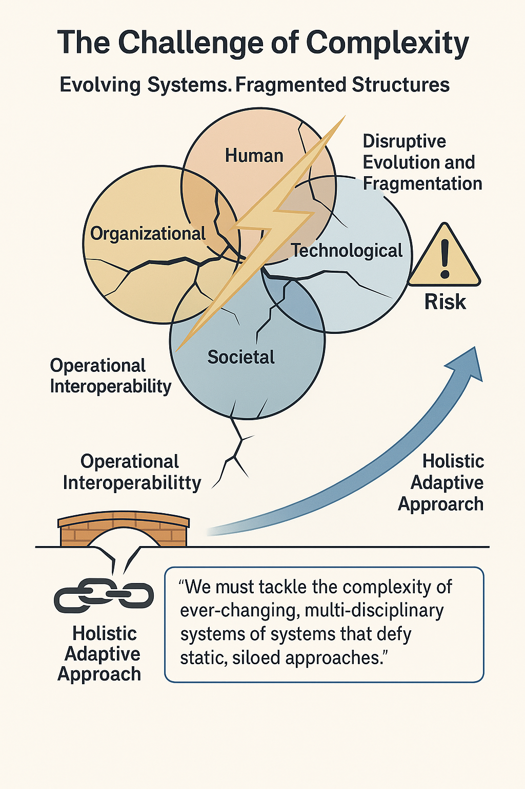

Semantic Interoperability Masterclass
From Foundational Principles to Interactive Knowledge Cartography
Presented by Dr Nicolas Figay and Pr Parisa Ghodous
🎯 Learning Outcomes
- The visualization needs for architects having to build Continuous Operational Interoperability
- The gap according to performed State of the Art (SoA)
- An innovative approach for the semantization of dynamic interactive compound graphs
- Return on experience based on an implementing prototype, ArchiCG, demonstrating the accuracy of the approach
- The limitations and perspectives
Available resources for the MasterClass
You can access the presentation at nfigay.github.io/training/SemanticCartography.html .
You can access ArchiCG prototypes at https://nfigay.github.io/ArchiCG/ .
Masterclass Plan
- Research Context: Architects enabling Continuous Operational Interoperability
- Problem Statement and Semantic Graphs SoA
- Proposed Approach: Semantizing Interactive Compound Graphs
- Demonstration: Implementation and Usage with ArchiCG
- Conclusion: Limitations, Future Perspectives, and Call to Action
- Research Context: Architects enabling
Continuous Operational Interoperability
- Bridging Silos in Information System Engineering
- Bridging Silos Visually
- From semantic data to visual structures
- Key Challenges
1.1 Bridging Silos
in Information
Systems Engineering
Key Aspect
Explanation
Real-world systems
Span human, organizational, economic, societal, and
technological dimensions
Disruptive Evolution and Fragmentation
Rapid, often disruptive, evolution drives the continual
emergence of silos
Risk
Fragmentation threatens coherent system design and
interoperability
Critical Challenge for architects
Building Continuous Operational
Interoperability for
secured digital collaborations
Need
Holistic approaches that unify diverse aspects and
support ongoing adaptation

Architects
must tackle the complexity of ever-changing and multi-disciplinary
systems of systems
that defy static, siloed approaches.
| Key Aspect | Explanation |
|---|---|
| Real-world systems | Span human, organizational, economic, societal, and technological dimensions |
| Disruptive Evolution and Fragmentation | Rapid, often disruptive, evolution drives the continual emergence of silos |
| Risk | Fragmentation threatens coherent system design and interoperability |
| Critical Challenge for architects | Building Continuous Operational Interoperability for secured digital collaborations |
| Need | Holistic approaches that unify diverse aspects and support ongoing adaptation |
Architects must tackle the complexity of ever-changing and multi-disciplinary systems of systems that defy static, siloed approaches.
1.2 Bridging Silos
Visually
- Visuals help us grasp complexity (Moody, 2009).
- Maps reveal modular layers and connections (Bertin, 1983).
- Only graphics show the full web of relationships.
- Interactive graphs beat static diagrams for deep exploration.
- Cartography links separate models into integrated systems.
- Composed views improve understanding and decision-making
(Bertin, 1983).

“Visual
approaches are not
optional — they are the cognitive gateway to understanding
complexity.”
- Visuals help us grasp complexity (Moody, 2009).
- Maps reveal modular layers and connections (Bertin, 1983).
- Only graphics show the full web of relationships.
- Interactive graphs beat static diagrams for deep exploration.
- Cartography links separate models into integrated systems.
- Composed views improve understanding and decision-making (Bertin, 1983).
“Visual approaches are not optional — they are the cognitive gateway to understanding complexity.”
1.3 From semantic data to visual structures
From Gutemberg to Digital Age
| From | To |
|---|---|
| Paper-based drawings | Live, queryable models |
| Static views | Dynamic, user-centered navigation |
| Manual drawing | Automated layouting |
| Visual guesses | Semantically validated structures |
| Isolated diagrams | Interoperable knowledge graphs |
| Descriptive models | Decision-support systems |

Semantic Cartography is to knowledge
what GPS is to geography.
1.4 Key Challenges
Architects Navigating, Structuring, and Engaging with Composite Graphs
- Navigation: Understanding position, context, and relationships in large graph structures
- Structuring: Capturing multi-scale, layered, and modular logic across domains
- Engagement: Making complexity usable—both for human insight and machine processing

“Semantic cartography for architects is about making complexity navigable, structure comprehensible, and meaning actionable."
References (to be completed)
- Moody, D. L. (2009). The ‘physics’ of notations: Toward a scientific basis for constructing visual notations in software engineering. IEEE Transactions on Software Engineering, 35(6), 756–779. DOI
- Petre, M. (1995). Why looking isn’t always seeing: Readership skills and graphical programming. Communications of the ACM, 38(6), 33–44.
- Bertin, J. (1983). Semiology of Graphics: Diagrams, Networks, Maps. University of Wisconsin Press. (Originally published in French, 1967)
- Störrle, H. (2010). On the impact of layout quality to understanding UML diagrams. In Proceedings of the 3rd ACM SIGSOFT Int. Workshop on Visualizing Software for Understanding and Analysis (VISSOFT).
- Selic, B. (2003). The Pragmatics of Model-Driven Development. IEEE Software, 20(5), 19–25.
- Atkinson, C., & Kühne, T. (2003). Modeling languages as metamodels. In Proceedings of the UML 2003 conference, LNCS 2863, 17–31.
- Problem Statement - Semantic Graphs SoA
A visual approach to structuring, navigating, and reasoning over complexity
Powered by semantic models, rendered as dynamic composite graphs.- From Drawings to Semantic Visual Representations
- Giving Meaning to Symbol
- Challenges in Visual Communication & Interoperability
- Automatic layout of compound graphs
2.1 From Drawings to Semantic Visual Representations
- Visuals should formally represent knowledge and meaning (Moody, 2009).
- Each visual element must carry clear, interpretable semantics (Bertin, 1983).
- Graphs link how humans see and how machines understand data.
- Semantic views support queries, validation, and automation.
- Shared semantics enable interoperability across tools and domains.

“Visual representations must evolve from informal diagrams to semantic models that both humans and machines can navigate.”
2.2 Giving Meaning to Symbols
Combining Symbols into Meaning
- Meaning emerges from structure:Visual notations are not mere icons — they derive meaning from how symbols are arranged and connected (Bertin, Moody).
- Visual syntax governs comprehension: Similar to linguistic grammar, spatial arrangements, alignment, and linkage define a visual syntax, which enables correct interpretation.
- Formal visual languages: Diagrams like UML, BPMN, and ArchiMate use well-defined syntactic rules to express complex systems
- Structure conveys semantics: Position, shape, and size are not aesthetic — they systematically encode meaning.

“When aligned with perceptual principles, visual languages enable precise, scalable, and cognitively efficient communication of complexity.”
2.2 Giving
Meaning to Symbols
Visual Variables Infographic
- Beyond Symbols: Diagrams communicate meaning not just through shapes or icons, but via a rich set of visual features tailored to human perception.
- Jacques Bertin (1967) identified key visual
variables used in diagrammatic representations:
- Position — spatial placement conveys structure (e.g., order, flow).
- Size — encodes importance or quantity.
- Shape — differentiates categories or types.
- Color hue — signals classification or identity.
- Color value — implies intensity or magnitude.
- Orientation — used for direction or alignment cues.
- Texture/pattern — useful for distinction when color is limited.
- Daniel Moody (2009) extended this foundation with
cognitive
principles for designing effective visual notations:
- His principle of visual expressiveness suggests using as many visual variables as the data requires.
- Graphic economy and perceptual discriminability help balance clarity and cognitive load.
- These theories help explain why good infographics are not just “pretty pictures” but structured systems of meaning — much like formal languages.
2.3 Challenges in Visual Communication & Interoperability
- Standard languages (UML, BPMN, ArchiMate) are used for static diagrams — made for printed views and monolithic processes, not dynamic exploration.
- Visual models often lack interactive ways to explore meaning.
- Colors, nesting, links hold meaning but are rarely formalized.
- Semantic data and visuals are often disconnected.
- Few tools mix nesting, links, and typing for rich views.
- Tools and data live in silos, hard to combine smoothly.
- Costly software and scattered data block easy access and fusion.
Considering both State of the art and state of the practice, nothing exist considering simultaneously the combination of visual, dynamic, compound and semantic
2.4 Automatic layout of compound graphs as the starting point
Advanced visualization technics continuous survey and assessment
| Feature | Description |
|---|---|
| Compound Nodes | Structure complex graphs hierarchically with parent-child grouping |
| Collapse/Expand Plugin | Interactively hide/show nested nodes and edges for clarity |
| CSS-like Styling | Define custom visual notation for nodes, edges, and groups |
| Dynamic Updates | Add, remove, or update elements interacting with the diagram |
| Event-Driven Interaction | Respond to user input with custom behaviors |
| Plugin Ecosystem | Layouts, context menus, undo/redo, edge tools, and more |
| Automatic Layouts | Support for compound graphs |
| Cross-Browser Support | Lightweight, performant, and runs in any modern browser |
A fully featured COMPOUND graph library written in pure JS
Note: Cytoscape.js is just one technical solution. Other alternatives are being assessed.
Compound collapsible/expandable auto-layouted interactive graphs
One of the main trigger for semantic cartography concept development
- Proposed Approach: Semantizing Interactive
Compound Graphs
A visual approach for navigating over complexity powered by semantic models, rendered as dynamic composite graphs.
- Semantic Cartography: Principles and Implementation
- Semantic Cartography: Definition model and method
- Conclusion
3.1 From Graph Theory to Semantized Compound Graphs
| Graph Structure Evolution | |
|---|---|
| Usual Graphs (Graph Theory) | Id and Labels as data properties for nodes and edges; edges link nodes via source and target object properties |
| Cytoscape Graphs | Support for parent object property on nodes (compound structure) |
| Our Contribution to the State of the Art | |
| Semantization of Graphs | Use of a type data property for nodes and edges
|
| Semantized Compound Graphs | Introduction of parentRelationId as an object
property |

We propose the Semantized Compound Graph Paradigm
3.2 Semantic Cartography: Definition model and method
| Definition Model | Method (Tasks) |
|---|---|
| Domain Conceptual Metamodel: abstract types and relations | T1 – Formalize textual value for the types |
| Textual structure and terms (Concrete Syntax 1) | T2 – Formalize Visual symbols for the type |
| visual representation and symbols (Concrete Syntax 2) | T3 – Formalizing the mapping by mean of Cytoscape engine selectors and styles. The notation must exist. If not, T50. |
| Mapping: aligns textual & visual syntax to conceptual types | T50 – Defining a visual notation when non existing or non complete(e.g. OWL) |
| Selectors: define what elements are targeted (e.g., node[type='X']) | |
| Styles: control visual rendering (shape, color, icon) | |
| Cytoscape Rendering Engine: Realisation component for mapping execution |

We propose a definition model and a method for semantizing compound graphs for such or such a language
3.3 Conclusion
When having to deal with
interoperability, Architects face a growing complexity and
a faster pace of change.
We identified through the SoA a lack for
addressing visual dynamic and interactive compound graphs.
- For this we introduce a new paradigm: Semantized Interactive Compound Graphs
- We produced a Definition Model to build semantic cartographies
- We proposed a method for semantizing graphs with such or such visual language
- We should be able then to switch from static, Gutenberg-style media to dynamic, digital graphs in order to support Architects to build operational inteoperabily.

Let's now present and demonstrate this approach on top of a produced demonstrator, ArchiCG
- Demo: implementation & usage with ArchiCG
ArchiCG is an open initiative aiming at exploring Semantized Interactive Compound Graphs usage, but also the name of an open source tool constituing an experimental platform.
- Architectural Principles for openess & interoperability
- Overal Business Case: building Interoperability based on open standards
- Enterprise Landscape with ArchiMate
- Knowledge landscape with OWL visualisation
- Product landscape with ISO STEP
- Blockchain Digital Business Ecossytem landscape - no language
- Conclusion
Architectural Principles for openess & interoperability
Aggregator for siloed
enterprise data distributed in heterogenesous enterprise
repositories:
Business Management System, Product Lifecycle Management Systems,
Model
Based System Engineering model repositories, Configuration
Management DataBase (CMDB), Application repositories...
| Principle | Description |
|---|---|
| Web-native Architecture | Runs entirely in the browser — no server required, enabling simple deployment and access anywhere |
| Open Technologies | Built on vanilla JavaScript and SVG, using open formats (JSON, RDF, SVG) to maximize compatibility |
| Modular Design | Activatable components and palettes allow integration of multiple modeling languages (ArchiMate, OWL,ISO STEP P21, etc.) |
| Silo Independence | Usable offline or across networks, without relying on centralized platforms or locked ecosystems |
| Local Data only and no referential | For security constraints and for preventing one more database to maintain |
- Conclusion: Limitations, Future Perspectives,
and Call to Action
Limitation of our research, outcomes and future perspectives
- Limitations: integrating the component paradigm
- Outcomes: identified Interoperability issues to be adressed
- Future perpectives
- Conclusion
- Key Points
- Perspectives
H.1 Summary of Key Points
To build semantic interoperability, we have
- Defined what semantics is and its links with ontology, logic, and set theory
- Explored OWL as one of the ontology formalization languages that supports the needs for precisely defining semantics with the help of computers
H.2 Perspectives
We have limited ourselves to semantic aspects without detailing the IT aspects and implementation. Furthermore, this is only an introduction and it may be necessary
- to deepen the production of ontology representations in OWL for more complex models
- to explore more technical aspects related to W3C specifications and technologies associated with Linked Data and the Semantic Web
- to work on production chains and environments for ontology consumption
- to work on ontology engineering and standards such as SMART
- to consider other formalization languages based on higher-order logics or other types of logic
- to work on higher-level architectures...
Annexes
- Symbols and concepts used to describe ontologies
- Slide template
Symbols and concepts used to describe ontologies
Table of definitions and symbols
| Logic | Characteristics | Example | Formalization (Manchester) |
|---|---|---|---|
| \(\mathcal{A}\mathcal{L}\) | Attributive language: allows atomic negation, concept intersection, universal restrictions, limited existential quantification | Concepts "Animal" and "Plant" can be negatively combined. | Animal and not Plant |
| \(\mathcal{F}\mathcal{L}\) | Frame-based language: allows concept intersection, universal restrictions, limited existential quantification, role restrictions | A "Person" must be an "Employee" and have a "Manager" role. | Person and Employee and hasRole some Manager |
| \(\mathcal{E}\mathcal{L}\) | Existential language: allows concept intersection, existential restrictions | An "Animal" must exist in a specific class. | Animal and existsIn some Species |
| \(\mathcal{A}\mathcal{L}\mathcal{C}\) | An attributive description logic language used to define concepts and relations in an ontology. It models ontologies by combining concepts, relations, and restrictions. | Animal ⊓ (∃a: attr): An "Animal" concept with an existential restriction on the "attr" relation. |
Class: Animal SubClassOf: hasAttr some L or hasAttr some C |
| \(\mathcal{S}\mathcal{h}\mathcal{O}\mathcal{I}\mathcal{Q}\) | ShOIQ is an extension of ALC that adds inverse roles, nominal roles, and cardinality restrictions. It allows specifying more complex concepts, including the use of specific individuals in axioms. | ShOIQ: Class {hasPart some A} |
Class: ClassName SubClassOf: hasPart some A hasPart exactly 2 B hasPart some individual1 hasPart inverse some C |
| \(\mathcal{S}\mathcal{h}\) | The letters "Sh" in ShOIQ refer to the possibility of using nominal roles, i.e., roles that link specific individuals instead of abstract concepts. | hasPart some {A} | maritalStatus some {"Single", "Married"} |
| \(\mathcal{O}\) | The letter "O" in ShOIQ indicates that inverse roles can be used. This allows defining relationships in the opposite (inverse) direction of a role. | hasPart inverse some {A} | inverse (isSonOf) some {a} |
| \(\mathcal{I}\) | The letter "I" in ShOIQ refers to the use of cardinality restrictions, i.e., the number of occurrences of a role or relation an individual can have. | ≥2 hasPart some A | isMotherOf some Daughter |
| \(\mathcal{Q}\) | The letter "Q" in ShOIQ allows specifying restrictions on individuals linked by a role (nominal roles), providing greater expressivity for relations between individuals. | ≥1 hasPart some {a} | isMotherOf min 1 {a, b, c, d, e} |
| \(\mathcal{N}\) | Numeric component: allows defining restrictions on numeric or temporal values, including intervals, equalities, and value comparisons. | ≥ 1 R.value ≥ 10 && value ≤ 20 |
Class: Person SubClassOf: hasAge min 1 hasAge >= 10 hasAge <= 20 |
| ≥n R | The restriction ≥n specifies that for a given role R, an individual must have at least n relations of type R with other individuals. | ≥2 hasPart some {A} | |
| R− | The inverse role (R−) allows defining a relationship in the opposite direction of a given role. For example, an inverse of "hasPart" could be "isPartOf". | isPartOf some {A} | ObjectProperty: isParentOf InverseOf: isChildOf |
| {a} | Nominal roles specify a specific individual in a relation. For example, "hasPart some {John}" refers to the relation where an object has a part specifically linked to an individual named "John". | hasPart some {John} | isSonOf some {a} |
| R o S | Role composition (R o S) allows defining a complex relation combining two roles into one relation. Also called a chain. | hasPart o isPartOf | isMotherOf some (isDaughterOf some) |
| A ≡ B | The axiom "A ≡ B" defines two classes A and B as equivalent. This means everything belonging to A also belongs to B and vice versa. | A ≡ B |
Class: BornAfter2000 EquivalentTo: hasBirthYear some xsd:dateTime[>= "2000-01-01T00:00:00"^^xsd:dateTime] |
| C ⊆ D | The symbol "⊆" indicates that a concept C is a subset of another concept D, meaning everything that belongs to C also belongs to D. | C ⊆ D | Class: Daughter SubClassOf: Child |
| ABox | The ABox (Assertion Box) contains assertions about individuals, i.e., facts regarding instances of an ontology. This includes information such as an individual's membership in a concept or relations between individuals. | Person(Pierre): Pierre is an instance of the class "Person". | Individual: d Types: Daughter |
| TBox | The TBox (Terminology Box) contains axioms about concepts, i.e., definitions that describe the ontology's structure, such as relations between concepts or equivalences. | Person ⊑ Human: Every instance of "Person" is also an instance of "Human". | Class: Daughter SubClassOf: Child |
| RBox | The RBox (Role Box) contains axioms about roles or relations between individuals, such as role hierarchies or properties like transitivity or reflexivity. | fatherOf ≡ inverse(motherOf): The relation "fatherOf" is the inverse of "motherOf". | ObjectProperty: isParentOf InverseOf: isChildOf |
| Role | A role is a relation between two individuals in the ontology. Roles can be used to express connections between concepts, such as properties or relations like "is a parent of" or "has an address". | fatherOf(Pierre, Jacques): "Pierre" is the father of "Jacques". | ObjectProperty: isFatherOf |
| Class defined by an extensive set of individuals | A class can be defined as the set of individuals satisfying certain conditions or properties. This can include explicit definitions such as {a1, a2, ..., an}, where each element belongs to a specific group of individuals. | Person ⊓ {Pierre, Jacques}: The class "Person" can be defined by the set of individuals {Pierre, Jacques}. | {a,b,c,d,e,f} |
| Set of values | A set of values represents a collection of elements that can be assigned to a property or role. For example, a set of values could be the possible colors an object may have. | Color ⊑ {Red, Blue, Green}: The class "Color" is defined by the possible values {Red, Blue, Green}. | {"Single", "Divorced", "Married", "Widowed"} |
| ⊥ | The bottom concept (empty set, represents a contradiction). | ⊥: An empty concept, no individual belongs to it. | owl:Nothing |
| ⊤ | The universal concept (universal set). | ⊤: The universal concept, all instances belong to it. | owl:Thing |
| A | An atomic concept (a base class of individuals). | A: An atomic concept such as "Person". | Class: Person |
| ¬C | The negation of concept C (complement). | ¬Person: A concept representing everything that is not a "Person". | not Person |
| C ∩ D | The intersection of concepts C and D (both concepts). | Child ⊓ Male: The intersection of "Child" and "Male". | Male and Child |
| C ∪ D | The union of concepts C and D (either concept). | Daughter ⊔ Son: The union of "Daughter" and "Son". | Daughter or Son |
| ∃R.C | Existential restriction (there exists a relation R with concept C). | ∃a: Child: There exists a relation "a" (e.g., "is child of") with concept "Child". | isChildOf some |
| ∀R.C | Universal restriction (every relation R must satisfy concept C). | ∀a: Child: Every relation "a" (e.g., "has child") must lead to a "Child". | ObjectProperty: isParentOf Range: Child |
| ≤1 R | Functionality (at most one R). | ≤1 a: Child: "There exists at most one child" for each instance. | isChildOf max 1 |
| ≥n R, ≤n R | Unqualified cardinality restrictions (at least/at most n relations R). | ≥2 a: Child: "There exist at least two 'a' relations of type 'Child'." | isChildOf min 2 |
| ≥n R.C, ≤n R.C | Qualified cardinality restrictions (at least/at most n relations R to concept C). | ≥2 a: Child ⊓ Male: "There exist at least two children and each child is a Male." | isChildOf min 2 and Male |
| {a} or {a1, ..., an} | Nominals (a specific individual or a set of individuals). | {Pierre}: A nominal concept where "Pierre" is a specific individual. | {a} |
| R— | Inverse of the role. | fatherOf—: The inverse of the relation "fatherOf", i.e. "childOf". | ObjectProperty: isParentOf InverseOf: isChildOf |
| R ∩ S | Intersection of roles. | fatherOf ⊓ motherOf: An individual who is both "fatherOf" and "childOf". | Father and Son |
| R ∪ S | Union of roles. | fatherOf ⊔ motherOf: An individual who is either "fatherOf" or "motherOf". | Father or Mother |
| ¬R | Complement of the role. | ¬fatherOf: The complement of the relation "fatherOf", i.e. "not fatherOf". | not Father |
| R o S | Role chain (composition). | fatherOf o parentOf: The composed relation between "fatherOf" and "parentOf". | ObjectProperty: hasGrandchildren SubPropertyChain: isParentOf o isParentOf |
| R* | Reflexive-transitive closure. | fatherOf*: The relation "fatherOf" with its reflexive-transitive closure (includes ancestors). | ObjectProperty: isSiblingOf Characteristics: Transitive |
| id(C) | Concept identity. | id(Person): The identity relation for the concept "Person". | - |
| Empty TBox | No concept definitions are present. | - | - |
| A ≡ C | Acyclic TBox: A is equivalent to C; no cycles allowed. | Person ≡ Human: "Person" is equivalent to "Human". | - |
| C ⊆ D | General TBox: concept C is a subset of concept D. | Person ⊆ Human: "Person" is a subset of "Human". | - |
| Tr(R) | Role transitivity. | Tr(fatherOf): The relation "fatherOf" is transitive. | - |
| R ⊆ S | Role hierarchy: role R is a subset of role S. | fatherOf ⊆ parentOf: The relation "fatherOf" is a subset of "parentOf". | ObjectProperty: hasGrandchildren SubPropertyOf: isFamilyOf |
| R o S ⊆ R | Complex role inclusions. | fatherOf o parentOf ⊆ fatherOf: A role chain "fatherOf" and "parentOf" is a subset of "fatherOf". | - |
| s | Additional role characteristics. | - | - |
[Short title describing the slide topic]
[Subtitle explaining the main idea]
[Concise introduction explaining the topic addressed]
- [Key point #1] :
- [Detailed explanation of key point #1]
- [Key point #2] :
- [Detailed explanation of key point #2]
- [Key point #3] :
- [Detailed explanation of key point #3]
[Conclusion or transition to the next slide]
![[Description of the image]](img/ontology.png)
OWL Ontology derived from ArchiMate as a Semantic Cartography new
Collapse nodes edges.
Selection Expand nodes edges
Collapse nodes edges.
Other Content Slide
Other content without any graph.
Graph 2 Slide
Here is some textual content for Graph 2.
Let's Test Your Understanding!
Answer this quick quiz before we continue.